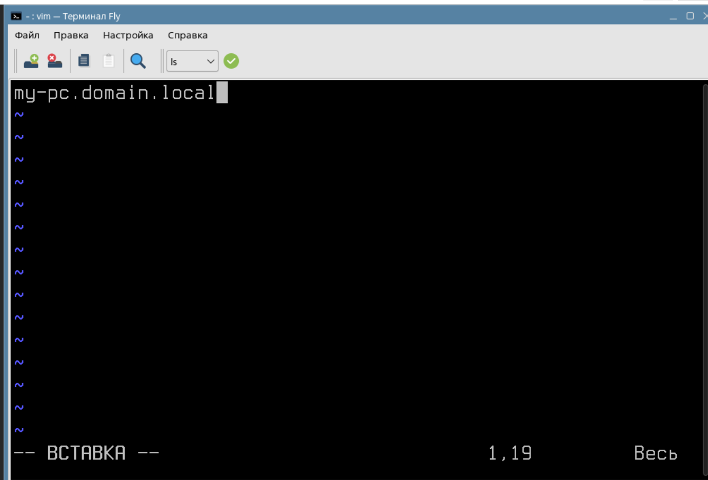
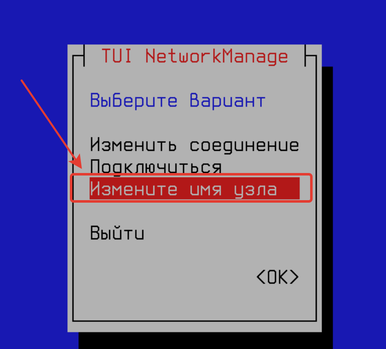
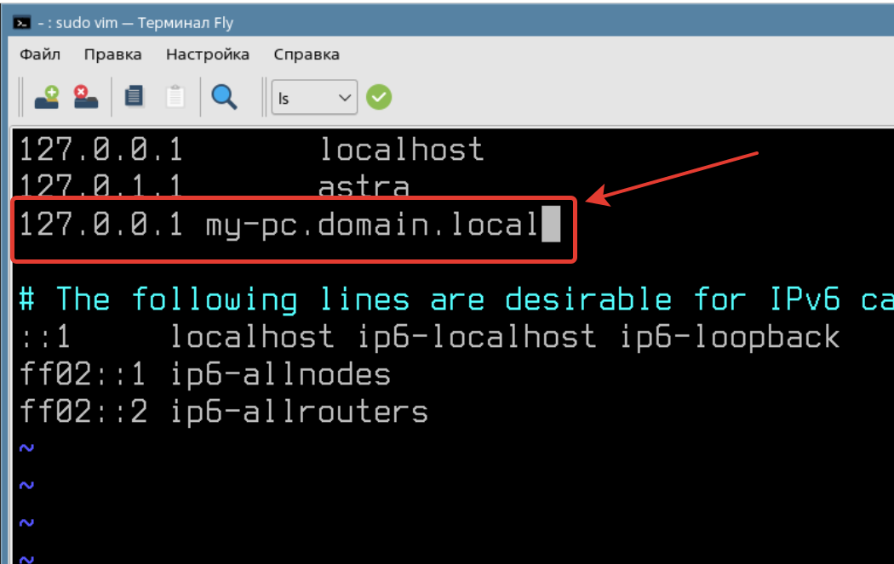
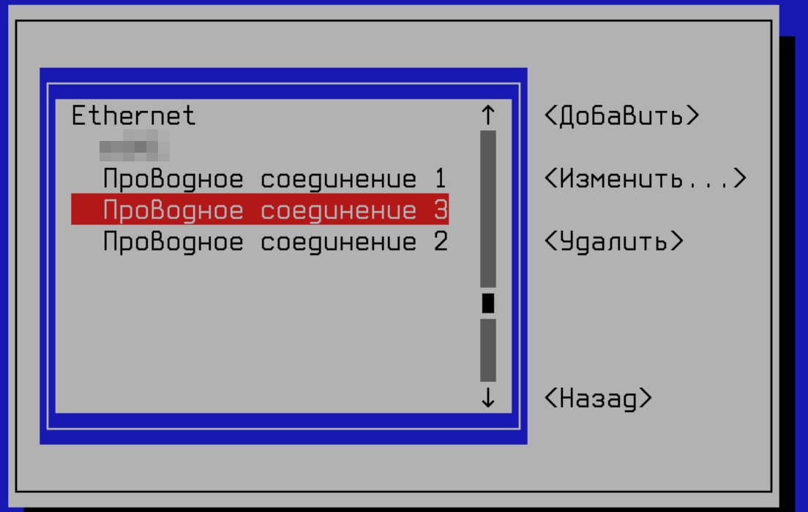
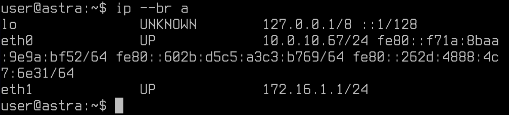

Лабораторная работа №1. Усложнённый материал по итогам видеурока №1.
<---- Обратите внимание на консольный сервер в левой части экрана, вам следует использовать этот сервер для выполнения лабораторной работы
Цель работы
Познакомиться с основными инструментами базового администрирования Astra Linux.
Оборудование, ПО:
Виртуальная машина под управлением ОС Astra Linux 1.7 в режиме защищенности "Воронеж".
Ход работы:
В этой теме мы обсудим основные конфигурации, которые требуется настроить перед работой с Astra Linux.
На что данный курс опирается?
В данном курсе мы будем опираться на задания чемпионатов профессионального мастерства по компетенции "Сетевое и системное администрирование" разных лет.
Настройте имена хостов
Зачастую, любое задание с данных чемпионатов начинается именно с этой строки. Неужели это так важно?
Настройка корректных имен компьютеров в сети имеет несколько преимуществ:
- Удобство и легкость идентификации: Использование описательных и понятных имен компьютеров помогает администраторам быстро и легко идентифицировать нужное устройство в сети.
- Упрощение администрирования: Правильно настроенные имена компьютеров облегчают управление сетью, помогают быстрее находить и устранять проблемы и проводить необходимые изменения.
Перейдем к настройке
Казалось бы, что может быть проще установки имени на компьютер? Но вариантов через какие инструменты и команды это можно сделать - довольно много. Рассмотрим некоторые.
1. Редактирование файла /etc/hostname
В этом файле достаточно внести в одну строчку название вашего компьютера.
Но зачем мы еще указали доменное имя? Сочетания короткого имени "my-pc" с приставкой его домена называется FQDN.
FQDN (Fully Qualified Domain Name) - это полностью определенное доменное имя. Это адрес, который полностью идентифицирует конкретное устройство в компьютерной сети. FQDN состоит из нескольких частей, разделенных точками. Например, для имени my-pc.domain.local, "my-pc" является коротким именем компьютера, "domain" - доменом второго уровня, а ".local" - доменом верхнего уровня.
Использование FQDN важно для точного идентифицирования устройства в сети. Также, это упрощает администрирование и ввод компьютера в доменную инфраструктуру ALD(OpenLDAP) или Microsoft Active Directory.
2. Использование команды hostnamectl
Введите команду:
sudo hostnamectl set-hostname my-pc.domain.localИ в этом случае имя вашего компьютера будет изменено.
3. Использование nmtui
NMTUI - это аббревиатура (Network Manager Text User-Interface). Консольная утилита устанавливается в Astra Linux по умолчанию, если вы используете графический интерфейс или установили пакет NetworkManager. Данная программа используется для настройки IP-адресации на компьютере, но также имеет функционал настройки имени компьютера (хостнейма).
Пожалуй, три варианта хватит, но что лучше выбрать? В случае с настройкой имени компьютера - выбирайте что удобнее для вас, в первую очередь.
Я настроил имя, и теперь компьютер медленнее выполняет команды!!
Частая особенность, что после настройки имени устройства команды sudo выполняются с существенной задержкой.
Это связано с тем, что команда sudo пытается выполнить поиск нового имени. Для этого необходимо или создать DNS-запись в вашем домене, которая бы указывала на этот компьютер. Или создать её вручную в файле /etc/hosts.
Файл /etc/hosts - это текстовый файл в операционной системе Unix/Linux, который используется для соответствия IP-адресов именам хостов. Когда устройство пытается подключиться к другому устройству по имени (например, веб-сайту), оно сначала обращается к файлу /etc/hosts, чтобы узнать соответствующий IP-адрес этому имени.
В файле /etc/hosts обычно указывается разрешение имен хостов на их соответствующие IP-адреса в локальной сети. В нем можно добавлять собственные записи, чтобы перенаправлять запросы на специфические имена хостов на конкретные IP-адреса.
Формат файла следующий:
Любую запись можно добавить по формуле:
IP-адрес доменное_имяА если я настроил DNS-сервер и у меня есть запись в зоне domain.local, но все равно не работает?
Тогда нужно проверить, какой DNS-сервер у вас указан для работы.
Файл с такими сведениями находится по пути - /etc/resolv.conf (при условии, если используете NMTUI или графический интерфейс Fly для настройки IP-адреса).
Если работает на сервере, где отсутствует графический интерфейс и не установлен пакет NetworkManager, тогда сведения о DNS-сервере будут в файле /etc/network/interfaces.
Для проверки корректной работы DNS удобно использовать команду host, например:
host ya.ruВ указанной команде выше обращение происходит к тому серверу, что указан в конфигурационных файлах DNS (/etc/resolv.conf и /etc/network/interfaces).
Если вам необходимо проверить работоспособность конкретного DNS-сервера, команда может быть:
host ya.ru 8.8.8.8В этом случае запрос будет сформирован на адрес, указанный в команде.
Узнать подробнее о команде host можно через встроенную справку.
man hostИли
host --helpНастройте IP-адресацию на ВСЕХ хостах
Имя настроили, теперь необходимо выйти в компьютерную сеть. Для этого нам предстоит настроить IP-адресацию на сетевых интерфейсах нашего компьютера.
Посмотрим, какие сетевые интерфейсы существуют на нашей виртуальной машине:
ip --br aПервый интерфейс "lo", с ним все понятно.
Зачем Loopback нужен
Интерфейс loopback (или lo) является виртуальным интерфейсом, который используется для тестирования сетевого соединения на уровне сетевого протокола. Он позволяет установить локальное соединение между устройством и самим собой, что полезно для диагностики и отладки сетевых проблем.
Этот интерфейс также используется для тестирования и настройки различных сетевых сервисов, например, для проверки работоспособности сетевых приложений, настроенных на слушание определенного IP-адреса.
Инструменты настройки сети
Вероятно, если вы опытный пользователь Linux и уже испробовали множество разных дистрибутивов, то знаете - что вариантов как настроить сеть множество.
Можно пользоваться инструментом nmcli, nmtui, настройкой в файле /etc/network/interfaces или утилитой ip. Все эти инструменты достойны внимания, но стоит помнить одну истину:
Ни в коем случае нельзя использовать несколько инструментов настройки сетевых реквизитов одновременно.
Проверим эту истину на практике. Сконфигурируем наш eth1 интерфейс через файл /etc/network/interfaces.
1. Настройка через файл /etc/network/interfaces
Откройте указанный выше файл и внесите следующие значения:
auto eth1
iface eth1 inet static
address 172.16.1.1/24Описание выше является стандартной формой описания интерфейса. Прокомментируем описанные параметры:
- auto - добавить интерфейс в автозагрузку.
- iface - указываем обращение к конкретному интерфейсу.
- inet - для настройки IPv4-адреса, если бы указали inet6 - был бы IPv6.
- static - для настройки статического адреса.
- address - IPv4 адрес с маской подсети.
После выполненных настроек необходимо перезагрузить службу сети командой:
systemctl restart networkingПри этом соединение по RDP пропасть не должно!
И через команду ip a проверьте адрес:
Адреса нет! Хотя вроде бы все настроили правильно, но что случилось?
Откроем nmtui.
Перейдите в "Изменить соединения":
И здесь, обратите внимание, несколько разных соединений - в одном из них прячется наш eth1! В нашем случае - "Проводное соединение 3".
Обратите внимание, что на вашем рабочем месте номер соединения может отличаться от представленного на скриншотах ниже!
Это значит, что NetworkManager (nmtui) автоматически подключил данный сетевой интерфейс в управление и выполненные вами настройки в файле /etc/network/interfaces не применились. Чтобы исправить это, необходимо удалить данное соединение.
После удаления соединения перезагрузите службу networking, и убедитесь в корректных настройках eth1:
А если я хочу наоборот, переехать с network/interfaces на nmtui?
Тогда операция выполняется в обратном порядке, удалите все упоминание интерфейсов из /etc/network/interfaces, перезапустите службу networking, а затем выполните новые настройки в nmtui.
Неужели в /etc/network/interfaces можно только адрес указать? А как же шлюз или DNS?
Конечно можно, просто в нашей инфраструктуре, с учетом подключения по RDP это может стать причиной потери соединения до виртуальной машины.
Примеры как еще можно настроить /etc/network/interfaces ниже:
1. Пример настройки для статического IP адреса:
auto eth0
iface eth0 inet static
address 192.168.1.100
netmask 255.255.255.0
gateway 192.168.1.12. Пример настройки для DHCP:
auto eth0
iface eth0 inet dhcp3. Пример настройки для VLAN-tag:
auto eth0.100
iface eth0.100 inet static
address 192.168.1.100
netmask 255.255.255.0
vlan-raw-device eth04. Пример настройки для сетевого моста:
auto br0
iface br0 inet static
address 192.168.1.100
netmask 255.255.255.0
gateway 192.168.1.1
bridge_ports eth0
bridge_stp off5. Пример настройки с post-up скриптом, который выполняется после поднятия интерфейса:
auto eth0
iface eth0 inet static
address 192.168.1.100
netmask 255.255.255.0
gateway 192.168.1.1
post-up /path/to/script.sh6. Пример настройки с post-down скриптом, который выполняется после выключения интерфейса:
auto eth0
iface eth0 inet static
address 192.168.1.100
netmask 255.255.255.0
gateway 192.168.1.1
post-down /path/to/script.shВернемся в имена. Как выяснить, в каком порядке Linux обрабатывает имена, которые так часто встречаются в ежедневной работе?
Файл /etc/nsswitch.conf (Name Service Switch configuration file) используется в операционных системах Unix и Unix-подобных системах для настройки порядка разрешения имён иследования служб для поиска информации о пользователе (например, пароли, uid, gid) и группах, хостах, сетях и других служб.
Основной задачей файла /etc/nsswitch.conf является указание системе, в какой последовательности она должна обращаться к различным службам для разрешения имен. Например, файл может содержать информацию о том, что сначала необходимо искать информацию в локальной базе данных, а затем в файле /etc/hosts.
В /etc/nsswitch.conf можно настроить различные службы, такие как passwd (пользовательская информация), group (информация о группе), hosts (информация об IP адресах), networks (информация о сети) и другие.
Пример содержимого файла /etc/nsswitch.conf:
passwd: files ldap
group: files ldap
shadow: files ldap
hosts: files dns
networks: files
services: db files
protocols: db files
rpc: db files
ethers: db files
netgroup: filesЭтот пример указывает системе обращаться сначала к локальным файлам (files), а затем к службам LDAP для разрешения пользовательской информации, информации о группах и других службах.
А вот строка:
hosts: files dnsУказывает на то, что для разрешения доменных имен сначала используется файл /etc/hosts, а затем настроенный DNS-сервер на стороне клиента. Если планируется сменить данную настройку, то это можно сделать так:
hosts: dns filesПросто смените порядок в файле - и настройка выполнена.
Параметры ядра.
Файл /etc/sysctl.conf — это конфигурационный файл в операционной системе Linux, который используется для настройки параметров ядра системы через интерфейс sysctl. Этот файл позволяет администратору системы изменять различные параметры ядра, такие как сетевые настройки, безопасность, производительность и другие.
Параметры, определяемые в файле /etc/sysctl.conf, применяются при загрузке системы. Многие настройки по умолчанию задаются в файлах, расположенных в директории - /etc/sysctl.d/, но администратор может добавлять свои собственные параметры в /etc/sysctl.conf.
Примеры параметров, которые можно настроить в /etc/sysctl.conf, включают:
- Включение или отключение IP Forwarding
- Увеличение максимального количества открытых файлов
- Настройка TCP/IP стека
- Управление сетевыми буферами
- Настройки безопасности, такие как защита от определенных атак
Пример настройки параметров в файле /etc/sysctl.conf:
# Запретить IP Forwarding
net.ipv4.ip_forward = 0
# Увеличение максимального количества открытых файлов
fs.file-max = 100000
# Настройка TCP/IP стека
net.ipv4.tcp_syncookies = 1
net.ipv4.tcp_fin_timeout = 30
# Настройка сетевых буферов
net.core.rmem_max = 16777216
net.core.wmem_max = 16777216Чтобы применить изменения, внесенные в файл /etc/sysctl.conf, после его редактирования можно выполнить команду sysctl -p, которая перечитает файл и применит новые параметры к текущему состоянию ядра системы.
Примеры "тюнинга" файла /etc/sysctl.conf
1. Игнорировать все запросы ICMP ECHO и TIMESTAMP, отправленные на компьютер через широковещательную/многоадресную рассылку.
net.ipv4.icmp_echo_ignore_broadcasts = 12. Предотвратить распространенную атаку Syn Flood Подробнее тут.
net.ipv4.tcp_syncookies = 13. Применить исправление RFC 1337
net.ipv4.tcp_rfc1337= 14. Увеличить лимит дескрипторов системных файлов = 65535
fs.file-max = 65535А это зачем?
Увеличение лимита на количество дескрипторов файлов (file descriptors) в системе может быть необходимо по нескольким причинам:
- Управление большим количеством открытых файлов: Приложения и сервисы могут требовать большое количество открытых файлов для обработки больших объемов данных. Увеличение лимита на количество дескрипторов файлов позволяет обеспечить нормальную работу таким приложениям.
- Повышение производительности: Увеличение лимита на количество дескрипторов файлов может улучшить производительность системы при обработке большого количества одновременных соединений или операций ввода-вывода.
- Предотвращение ошибок из-за исчерпания ресурсов: При достижении лимита на количество дескрипторов файлов система может начать отклонять запросы на открытие новых файлов, что может привести к ошибкам в работе приложения или сервиса.
Практическая работа
- На полученной виртуальной машине установите имя по формуле: "вашеимя-любоечисло-pc". Например, ivan-9-pc;
- Настройте файл
/etc/nsswitch.confтак, чтобы сначала информация запрашивалась на DNS сервер, а затем в файл hosts; - Примените исправление RFC 1337 на вашей виртуальной машине;
- Исправьте ошибку "Unable to resolve" при обращении к sudo после смены имени компьютера самостоятельно.